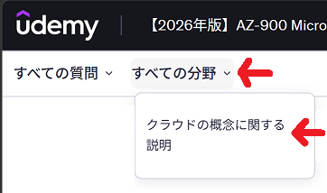
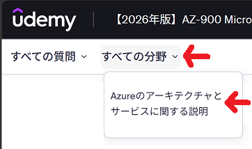

Azure 学習コンテンツ 目次
📚 Azure Gemini クイズ （AZ-900）
- AZ-900 Q1 クラウド概念
- AZ-900 Q2 コアアーキテクチャコンポーネント
- AZ-900 Q3 コンピューティングサービス
- AZ-900 Q4 ネットワーキングサービス
- AZ-900 Q5 ストレージサービス
- AZ-900 Q IT用語
🛠️ ハンズオン 仮想マシン（IaaS 基礎）
- リソースグループを作成する
- 仮想マシンを作成する（Windows）
- 仮想マシンにリモートデスクトップ接続する
- 仮想マシンのディスク構成を確認する
- 仮想マシンを 停止 / 開始 する
- 仮想マシンをスケールアップする
🛠️ ハンズオン ストレージ （匿名アクセス）
🛠️ ハンズオン ストレージ （ADLS Gen2）
📚 【2026年版】AZ-900 Microsoft Azure Fundamentals模擬試験問題集
📚 クラウドの概念に関する説明（すべての分野を変更して選択） 演習モード

- 演習テスト1: 【2026年版】AZ900模擬試験１
- 演習テスト2: 【2026年版】AZ900模擬試験２
- 演習テスト3: 【2026年版】AZ900模擬試験３
- 演習テスト4: 【2026年版】AZ900模擬試験４
- 演習テスト5: 【2026年版】AZ900模擬試験５
- 演習テスト6: 【2026年版】AZ900模擬試験６
📚 Azureのアーキテクチャとサービスに関する説明（すべての分野を変更して選択） 演習モード

- 演習テスト1: 【2026年版】AZ900模擬試験１
- 演習テスト2: 【2026年版】AZ900模擬試験２
- 演習テスト3: 【2026年版】AZ900模擬試験３
- 演習テスト4: 【2026年版】AZ900模擬試験４
- 演習テスト5: 【2026年版】AZ900模擬試験５
- 演習テスト6: 【2026年版】AZ900模擬試験６
🛠️ ハンズオン ロードバランサ（負荷分散規則）
- リソースグループを作成する
- 仮想ネットワークを作成する
- ネットワークセキュリティグループを作成する
- 可用性セットを作成する
- 仮想マシンを作成する（Windows 可用性セット）
- 仮想マシンに IISをセットアップする
- パブリックロードバランサーを作成する
- パブリックロードバランサー（負荷分散規則）をテストする
- パブリックロードバランサー（インバウンド NAT 規則）を追加する
📚 演習問題・学習ガイド
まとめ 資料
🗑️ リソースをクリーンアップする場合
リソース グループを削除する
必要がなくなったら、リソース グループを 含まれているすべてのリソースごと削除できます。
- ポータルメニューから [リソース グループ] を選択します。
削除する リソース グループを選択します。- コマンドバーで [リソース グループの削除] を選択します。
- 「削除を確認するために、リソース グループ の名前を入力してください。」の下部に、
削除する リソース グループを入力します。 - [削除] を選択します。
- 「削除の確認」が表示されますので [削除] を選択して、リソースとリソース グループの削除を完了します。